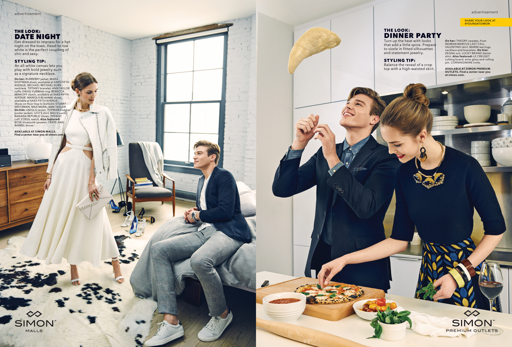
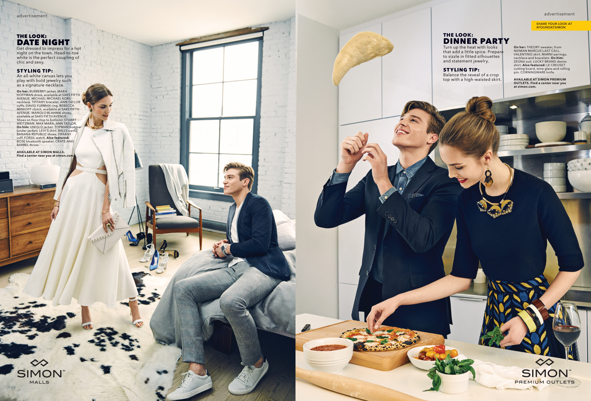

Simon Malls Special Advertising Sections
shot by sebastian kim
Joint eight page fashion stories curated by Glamour + GQ showcasing seasonal trends presented via couples-themed occasions. Program included custom shot inbook portfolios, trend videos featuring Glamour + GQ style ambassadors, reprints distributed at mall and live mall activations.

 
